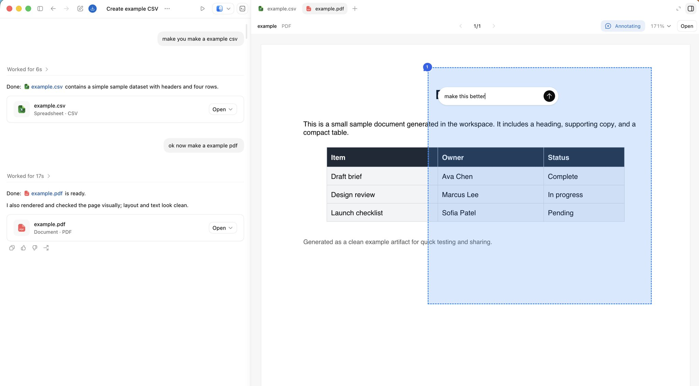
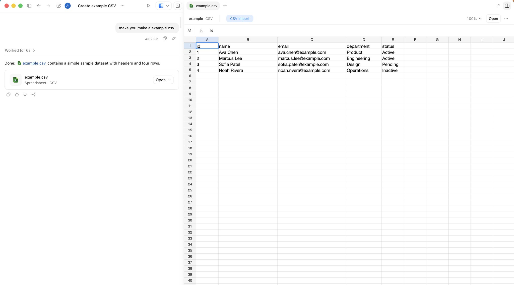
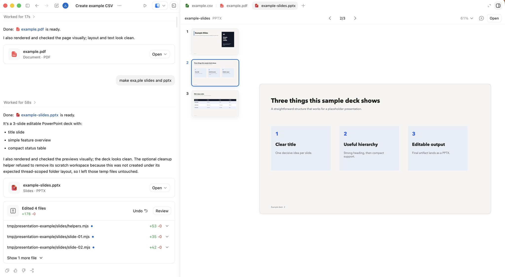

极致压榨 Codex
9 个能力维度释放 Codex 全部潜能
jason 那条 44.3 万阅读的 X 长文。Codex 正在从「写代码工具」演化成「干活的操作系统」——9 个被大多数人忽略的能力维度，把 Codex 真正用成 daily driver。

jason · Getting the most out of Codex · 2026/05/20
多数人第一次用 Codex 跟其他 coding agent 一样：看仓库、改代码、跑测试、开 PR。
但 Codex 的重心在变。它开始能跑 shell 命令、刷网页、调 API、导出文档、响应事件、触发自动化——它在变成一个「干活的操作系统」，而不只是 IDE 里的代码助手。
jason 这篇长文拆解了 9 个被大多数人忽略的能力维度：durable threads、voice input、steering & queuing、tools、work from anywhere、automations、goals、side panel、shared memory。把这些用对了，Codex 才会从「会写代码的助手」变成「真能交付活」的协作者。
英文是 jason 原文原版；中文是按中文阅读习惯整理的解读。两个一起看效果最好。
Durable threads
Durable threads（持久线程）是跨多轮会话保留工作上下文的 long-running Codex 线程。不是聊完就丢的短对话——是带历史、决策、偏好的持续工作区。
用 Pinned threads（固定线程）可以保存常用工作流。常见的几类：
- Chief of Staff thread — 帮你管日程、Slack、Gmail 漏看的消息
- Release thread — 跟某个发版周期绑在一起，记录每次发版的决策和状态
- Documentation review thread — 长期挂在文档维护上
- External monitoring thread — 盯外部信号（PR 评论、竞品动态、用户反馈）
Cmd-1 到 Cmd-9 直接跳到对应线程。Chief of Staff、release、docs review——一秒钟切到对应上下文，不用再翻历史。Voice input
Voice input 是 Codex 的内置能力。意义在于：语音能抓住还没被压缩成「正式表达」的原始想法。
特别适合这些场景：
- 模糊起点：用说的自然，但用打的别扭——比如「我好像记得 Ben 在 Slack 提过这事，具体我忘了，你帮我找一下」
- 2-3 分钟的 thought dump：任务还没成型的脑暴，语音比打字快得多
- 原始转录：一段未经整理的会议记录或口述规划笔记，比精炼过的 summary 信息密度更高——它保留了不确定、强调、没说完整的半截话
Steering & Queuing
两个看似相似、实际完全不同的能力。
Steering（飞行中纠偏）：在当前 step 没完成前，发新方向打断它。适合 agent 走错路、要拉回正轨时。例：做网站 review 时在侧栏里写批注：
- 「这个做小一点」
- 「这两个元素之间的间距不对」
- 「这块文案错了」
Queuing（排队）：不打断当前任务，把下一个任务排到队列里。适合当前任务快收尾、想提前布置下一步时。例：「活干完之后把预览链接发到 Slack 给 reviewer」。
Tools and reach
线程有了连续性，下一步是看它能操作什么。Codex 的触达范围按层级展开：
$browser— 侧栏内的 in-app browser，Codex 能在里面检查和标注网页@chrome— 走用户的 Chrome 登录态，处理需要 cookie/session 的工作@computer— 通过桌面 GUI 处理只在桌面上存在的任务
MCP servers 和 connectors 把同一思路延展到工作流其他环节。Slack、Gmail、Calendar——这些之所以重要，是因为很多关键任务首先以消息、收件箱、日程问题的形态出现，后来才变成代码。
Skills（技能）让反复用的工作流可复用。工作流跑顺之后，打包成 skill，下次 Codex 直接调用，不用每次重学流程。
$browser；需要登录态的工作用 @chrome；只有桌面 GUI 能跑的任务用 @computer。Slack/Gmail/Calendar 等任务首先以消息出现，先用 connector 接住再写代码。Work from anywhere
Codex mobile app 改变了「必须在桌前」这件事。
任务在 Mac 上起——文件、权限、本地环境都在那——然后在手机上随时插手。这改变了很多小事：离开桌子时 Codex 跑长任务、在外面答个问题、批准下一步、纠偏线程——然后回来时直接接上。本地环境不动，人不用非在电脑前。
Automations
Automations 让 Codex 按时间表跑工作。两种用法：
- Scheduled automation — 定期从一个 workspace 重新开始的场景（日报、定期仓库检查）
- Thread automation — 周期回到同一个活动线程，保留运行中的上下文（heartbeat 模式）
Pinned threads 还要等你回去。Thread automation 每隔几分钟/几小时检查一下、继续到满足条件为止、节奏随情况自动调。
Goals
Goals（目标）是 Codex 的长跑任务，需要有一个真正能达成的完成线，agent 才能一直推。
弱目标长这样：「把这个 Markdown 文件里的 plan 实现一下。」
强目标有可度量的成功标准。比如一个工程师把内部工具从 Python 迁到 Rust：建好新目录、定好 goal、把完成线写明白——新实现跑通 unit tests 才算完。
Goal = 持续执行 + 验证器。人定义 outcome、停止条件、判断 Codex 是否在接近的信号。
好用的验证器包括：
- test suite（测试套件）
- benchmark（基准）
- bug reproduction（能复现 bug 的脚本）
- validation matrix（验证矩阵）
- end-to-end workflow（端到端工作流必须持续跑通）
The side panel
Side panel（侧栏）让产物留在产出它的对话旁边。不用再 export 出来换 context、单独打开——直接在原地 review。
产物可能不只是代码：deck、PDF、网页、表格、对话里产出的任何 artifact。侧栏特别擅长 4 件事：
- 检查 artifact
- 标注要改的地方
- 操作网页面
- review 改动
侧栏能直接看 Markdown、spreadsheet、data table、document、slide。检查、标注、修改——不断开工作循环。


特别适合的产物类型：
- index.html
- Storybook
- Remotion Studio
- browser slides
- data apps
一个 index.html 就能成为持久可交互的 artifact，不需要 server。Thread automations 还能定期刷新静态 artifact——人回来时线程里有新东西等着。

Shared memory
长跑线程想要更值钱，得把记忆分享到单一对话之外。
Shared memory：把上下文存在单个线程之外，未来的工作可以从「明确、可 review」的东西继续。
一种持久模式：把长跑线程锚定到 Obsidian vault。实操就是一堆 plain files，方便 inspect、edit、move、长期保存。团队可以把那个文件夹放云存储、Git、Dropbox、Google Drive 或其他同步层——按工作流走。
vault 大概长这样：
顶层放 AGENTS.md，告诉 Codex 怎么更新这个 workspace——people、projects、decisions、open loops。
一个实用的 AGENTS.md 可能会这么写：
- 把
~/vault当作持久工作记忆 - 优先 canonical notes，不要 note sprawl
- TODOs、people、projects、daily summaries、scratch notes 各自走明确路径
- 保留 decisions、blockers、owners、dates、有用链接
- 没真东西变化时，不要 churn vault
代码放 repo。Vault 放滚动上下文——参与的人、改了什么、什么被 block、什么要 follow-up、什么会消失在两次会话之间。
重要上下文不能只活在 conversation transcript 里——写下来，下个线程能接上。
Codex 还有官方 Memories（设置 > 个性化 > 记忆）提供本地 recall 层——preferences、recurring workflows、known pitfalls。跟书面上下文互补，不替代。Chronicle 往同一方向推，帮 Codex 从最近屏幕上下文建记忆。
AGENTS.md 这种 plain file 里——透明、可改、不怕被覆盖。Codex still starts from code. 但 work 比 repo 走得更远。
从代码出发，到执行、到产物 review——即使活已经离开 repo。